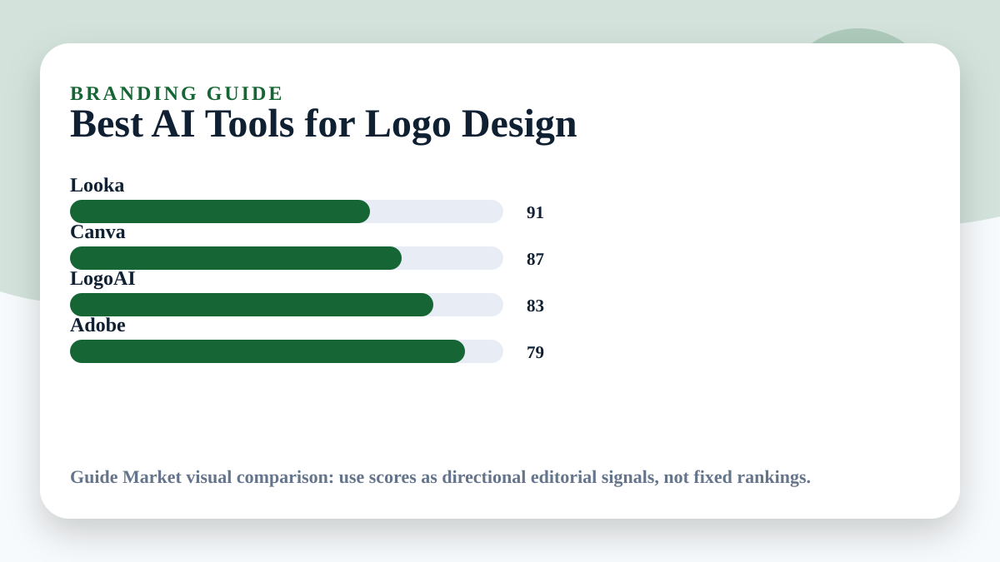

Best AI Tools for Logo Design
If you want to create a stronger first visual identity before investing in a full design system, AI can help you move faster, compare options, and build a repeatable workflow. The important part is choosing the right tool for the job instead of trying to force one app to do everything.

Quick answer
The best choice depends on your goal. Looka is usually the easiest place to start, Canva is useful when you want a more focused experience, LogoAI can help with comparison or structure, and Adobe is a strong supporting option for custom planning. For most readers, the smartest workflow is not one tool only. It is a simple stack: one tool for research, one for planning, one for execution, and one for review.
Comparison table
| Tool | Best use case | Why it matters |
|---|---|---|
| Looka | branding | Best starting point for most people. |
| Canva | automatic design | Strong specialist option for focused workflows. |
| LogoAI | startups | Useful when you want automation or comparison. |
| Adobe | visual identity | Flexible support tool when you need custom prompts and planning. |
What to look for before choosing
Before you sign up for any AI tool, define the result you actually want. A vague goal creates vague output. A precise goal gives the software something useful to optimize for. In this category, the most important criteria are ease of use, quality of suggestions, customization, price transparency, export options, and how well the tool fits into your existing routine.
Think about frequency too. A tool you use every day can be worth learning deeply, while a tool you use once a month should feel simple immediately. The best AI products reduce friction. They should help you make faster decisions, not create a second job where you manage prompts, settings, subscriptions, and dashboards.
Privacy is another important factor. Many people paste sensitive information into AI systems without thinking. When you use these tools for branding, avoid sharing private documents, passwords, medical data, financial account details, or personal information you would not want stored by a third-party service. Read the tool's privacy policy and use built-in privacy controls when available.
Looka
Looka can be a strong option when your main goal is branding. The advantage of using it in this workflow is that it gives you a structured starting point instead of forcing you to begin from a blank page. That matters because most people do not fail because they lack information. They fail because they have too many scattered options and no clear next step.
Use Looka with a specific prompt or setup. Tell it your goal, your constraints, your level, your deadline, and what you have already tried. Then ask for a plan with steps, alternatives, and tradeoffs. If the output feels generic, do not accept it immediately. Ask for a version that is more realistic, cheaper, faster, easier, more advanced, or better suited to your situation.
The limitation is that AI can sound confident even when it is incomplete. Treat the output as a draft, not as final truth. Check important details, compare options, and use your judgment. This is especially important when money, health, education, travel, or career decisions are involved. The best results come from a loop: generate, review, adjust, and verify.
Canva
Canva can be a strong option when your main goal is automatic design. The advantage of using it in this workflow is that it gives you a structured starting point instead of forcing you to begin from a blank page. That matters because most people do not fail because they lack information. They fail because they have too many scattered options and no clear next step.
Use Canva with a specific prompt or setup. Tell it your goal, your constraints, your level, your deadline, and what you have already tried. Then ask for a plan with steps, alternatives, and tradeoffs. If the output feels generic, do not accept it immediately. Ask for a version that is more realistic, cheaper, faster, easier, more advanced, or better suited to your situation.
The limitation is that AI can sound confident even when it is incomplete. Treat the output as a draft, not as final truth. Check important details, compare options, and use your judgment. This is especially important when money, health, education, travel, or career decisions are involved. The best results come from a loop: generate, review, adjust, and verify.
LogoAI
LogoAI can be a strong option when your main goal is startups. The advantage of using it in this workflow is that it gives you a structured starting point instead of forcing you to begin from a blank page. That matters because most people do not fail because they lack information. They fail because they have too many scattered options and no clear next step.
Use LogoAI with a specific prompt or setup. Tell it your goal, your constraints, your level, your deadline, and what you have already tried. Then ask for a plan with steps, alternatives, and tradeoffs. If the output feels generic, do not accept it immediately. Ask for a version that is more realistic, cheaper, faster, easier, more advanced, or better suited to your situation.
The limitation is that AI can sound confident even when it is incomplete. Treat the output as a draft, not as final truth. Check important details, compare options, and use your judgment. This is especially important when money, health, education, travel, or career decisions are involved. The best results come from a loop: generate, review, adjust, and verify.
Adobe
Adobe can be a strong option when your main goal is visual identity. The advantage of using it in this workflow is that it gives you a structured starting point instead of forcing you to begin from a blank page. That matters because most people do not fail because they lack information. They fail because they have too many scattered options and no clear next step.
Use Adobe with a specific prompt or setup. Tell it your goal, your constraints, your level, your deadline, and what you have already tried. Then ask for a plan with steps, alternatives, and tradeoffs. If the output feels generic, do not accept it immediately. Ask for a version that is more realistic, cheaper, faster, easier, more advanced, or better suited to your situation.
The limitation is that AI can sound confident even when it is incomplete. Treat the output as a draft, not as final truth. Check important details, compare options, and use your judgment. This is especially important when money, health, education, travel, or career decisions are involved. The best results come from a loop: generate, review, adjust, and verify.
A practical workflow
Start by writing a one-sentence goal. For example: I want to use AI to improve branding without wasting time or spending more than necessary. Then add your constraints. Include your budget, time available, experience level, preferred format, and any deal breakers. This turns AI from a general chatbot into a practical assistant.
Next, ask the tool to build a first plan. The plan should include steps, recommended tools, estimated time, common mistakes, and a checklist. Do not ask for only a final answer. Ask for reasoning, assumptions, and alternatives. That makes it easier to spot weak advice and choose a better path.
After that, turn the plan into action. If the tool suggests ten steps, choose the first three. If it gives five options, compare only the top two. AI is most valuable when it reduces decision fatigue. A polished plan is useless if it is too large to start. The goal is not to admire the output. The goal is to use it.
Finally, review the result. Ask what worked, what was unclear, what could be automated, and what should be improved next time. This review stage is where many people get the real benefit. The first AI response gives speed, but the second and third iteration give quality.
Use cases
Use AI to turn branding into a clear action plan, checklist, comparison, or repeatable routine.
Use AI to turn automatic design into a clear action plan, checklist, comparison, or repeatable routine.
Use AI to turn startups into a clear action plan, checklist, comparison, or repeatable routine.
Use AI to turn visual identity into a clear action plan, checklist, comparison, or repeatable routine.
Use AI to turn speed into a clear action plan, checklist, comparison, or repeatable routine.
Use AI to turn personalization into a clear action plan, checklist, comparison, or repeatable routine.
Prompts you can copy
Starter prompt: I want help with branding, automatic design, startups, visual identity, speed, personalization. Ask me the most important questions first, then create a practical plan with tools, steps, mistakes to avoid, and a simple checklist.
Comparison prompt: Compare Looka, Canva, LogoAI, Adobe for my situation. Use a table with strengths, weaknesses, price considerations, learning curve, and best use case. Finish with one recommendation for a beginner and one for an advanced user.
Improvement prompt: Review this plan and make it more realistic. Reduce unnecessary steps, identify risks, and give me a version I can start today in less than 30 minutes.
Common mistakes
The first mistake is expecting AI to replace judgment. It can organize options, draft plans, and explain ideas, but it does not know your full context unless you provide it. The second mistake is using too many tools at once. A large stack can feel productive while making execution slower. Start with one or two tools, then add more only when there is a clear bottleneck.
The third mistake is ignoring verification. If a tool recommends a product, route, budget, workout, meal, resume format, or business workflow, check the details before acting. AI is excellent at generating plausible drafts, but the responsibility for final decisions remains with you. Good AI use is not blind trust. It is faster thinking with a review step.
The fourth mistake is quitting after the first output. The best users iterate. They ask for a simpler version, a cheaper version, a more professional version, a safer version, or a version designed for their exact level. One prompt rarely produces the best answer. A short conversation usually does.
How to choose the best tool for you
Choose Looka if you want flexibility and broad support. Choose Canva if your priority is a guided experience with less setup. Choose LogoAI if comparison, tracking, or automation matters more. Choose Adobe if you want an assistant that can adapt to many different tasks around the main workflow.
If you are a beginner, the best tool is the one you will actually use. A perfect feature list does not matter if the interface feels confusing. If you are more advanced, look for integrations, export options, customization, and control. The more serious the use case, the more important it becomes to own your workflow instead of depending entirely on one platform.
Final recommendation
The best AI tool for this category is not necessarily the most famous one. It is the one that helps you make better decisions with less friction. Use these tools to clarify your goal, reduce research time, compare options, and create a plan you can actually follow. Keep the workflow simple, verify important information, and improve it each time you use it.
For most readers, a strong setup is simple: start with Looka, compare it with Canva, use LogoAI when you need a more specialized layer, and keep Adobe for flexible support. That gives you enough power without turning your workflow into a maze.
Extra practical notes
A good AI workflow should feel calmer after you use it. If the tool produces more tabs, more uncertainty, and more decisions, simplify the prompt. Ask for fewer options, clearer priorities, and a next action. In real life, useful AI is not about having the most advanced setup. It is about saving attention for the decision that matters.
When comparing tools, test them with the same task. Give each one the same goal, constraints, and expected format. Then compare the quality of the answer, the clarity of the steps, and how much editing you had to do. This is more reliable than reading feature lists because it shows how the tool behaves in your real situation.
Extra practical notes
A good AI workflow should feel calmer after you use it. If the tool produces more tabs, more uncertainty, and more decisions, simplify the prompt. Ask for fewer options, clearer priorities, and a next action. In real life, useful AI is not about having the most advanced setup. It is about saving attention for the decision that matters.
When comparing tools, test them with the same task. Give each one the same goal, constraints, and expected format. Then compare the quality of the answer, the clarity of the steps, and how much editing you had to do. This is more reliable than reading feature lists because it shows how the tool behaves in your real situation.